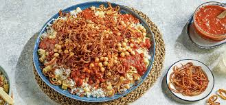

Koshari

How To Make Egyptian Koshari At Home (Step by Step Recipe)
Koshari is a hearty vegan meal of lentil rice, chickpeas, spicy vinegar tomato sauce, pasta, and fried onions. This Egyptian koshari recipe is an authentic family recipe, and it makes a large quantity. It's perfect for meal prepping or feeding a crowd. It does take a bit of time to make, which is why the serving size is set high (so you can enjoy leftovers).
Ingredients
Chickpeas
- 1 cup dried chickpeas or 2 - 15 ounce cans of chickpeas
- 2 teaspoon ground cumin
- 1/2 lime
Fried onions
- 1½ lbs onion about 2 large onions
- 6 tablespoon flour to toss the onions in prior to frying
- oil for frying preferably sunflower oil
- salt to taste
Fresh red sauce (Optional)
- 1 lb tomatoes
- 6 ounces green bell pepper
- 6 ounces onion
- 3 garlic cloves
- 1 teaspoon ground coriander
- 1 teaspoon ground cumin
- 1 tablespoon oil from the fried onions
- 1 lime
- salt and pepper to taste
Koshari lentil rice
- 1 cup dried brown lentils
- 2 cups dry Calrose rice or short-grain rice
- 1¼ lbs onion
- 4 tablespoon oil
- 4 cups water
pasta
- 8 ounces elbow pasta
- 8 ounces dried spaghetti
Traditional koshari red sauce
- 2¼ lbs tomatoes
- 2 tablespoon ghee
- 1 teaspoon chili flakes or cayenne powder optional
- 9 garlic cloves
- 3 tablespoon tomato paste
- 3 tablespoon white vinegar
- 1 teaspoon ground cumin
- 1 teaspoon ground coriander
- ½ teaspoon sugar
- 1 teaspoon salt or to taste
- 1 teaspoon black pepper or to taste
Steps
Soak Dry Lentils and Dry Chickpeas Ahead of Time
- Soak the dried lentils and dried chickpeas in water for 3 hours prior to making koshari.
Prepare the chickpeas
- Boil the dried chickpeas until semi-cooked (about 45 minutes to an hour). Drain water. Add fresh water and the ground cumin. Boil chickpeas a second time for another 30 minutes. Once chickpeas are cooked, squeeze the lime over the chickpeas.
Fry the onions
- Chop the onions into circles. Mix with flour and set aside for 30 minutes prior to frying.
- Fry in oil, preferably sunflower oil. Using a frying spatula, remove the onions from the oil. Set onto a paper towel and set aside. Salt as desired. Keep the sunflower oil to use some of it in other parts of the recipe.
Make the fresh red sauce (optional)
- Blend the tomatoes, bell pepper, onion, and garlic cloves in the food processor. If you would like a spicy sauce, add 1 spicy pepper. Add the ground cumin, ground coriander, oil (from the fried onions), lime juice, salt, and pepper. Blend and set aside.
Make the Koshari Lentil Rice
- Blend the onions in a food processor. In a high-rimmed stovetop pot, add the oil (from the fried onions). Cook the blended onions slowly on low heat for about 10 minutes.
- Add the drained brown lentils (these will be about 2.25 cups after being soaked) and water. Bring to a boil. Simmer for 10 minutes covered, or until they soften.
- Turn down the heat to medium-low. Add the short-grain rice, salt, and pepper. Mix the koshari rice and cook on medium-low heat covered until the rice is tender (about 12 to 15 minutes). Turn off the stove and allow the rice to rest covered for 5 minutes.
Cook the pasta
- Boil water and add about 1 tablespoon of salt. Break the spaghetti pasta in half, then break the half again making quarter-size sections of spaghetti. Break about 15 spaghetti noodles at the same time.
- Add the spaghetti pasta and elbow pasta to the boiling water. Cook the pasta until desired firmness. Drain the pasta and set it aside.
Koshari Vinegar Red Sauce
- Blend the tomatoes in a blender. Strain tomatoes into a bowl. Alternatively, use canned tomato passata (see note 7). Mince the garlic cloves.
- Fry oil (or ghee) with 1 teaspoon chili flakes (or chili powder) for 30 seconds then add the minced garlic cloves. Add the tomato paste and vinegar for about 30 seconds before adding the blended tomatoes.
- Add the ground cumin, ground coriander, salt, sugar, and ground black pepper. simmer for about 10 minutes.
Assemble the dish
Layer the dish, starting with lentil rice on the bottom, then cooked pasta, chickpeas, koshari vinegar sauce (and optional sauce), and top with fried onions.
Homepage